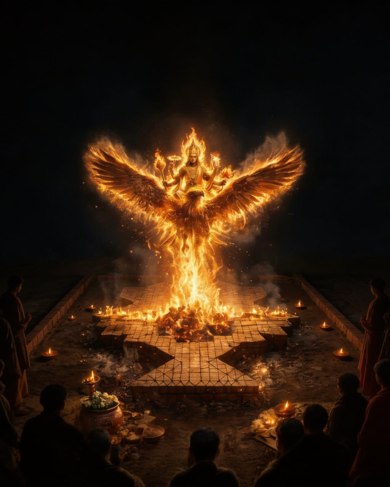

The First-Ever
Athirathra Mahayagam
Witness the cosmic ritual of crossing the night. Envisioned by Acharyasri Rajesh. April 17 - 26, 2026
Crossing the Night
Athirathram is a unique Soma Yajna that transcends the boundaries of standard rituals. Extending through 10 intense days and nights, it aligns the individual consciousness with the Rta—the cosmic rhythm.
This ancient technology of sound and fire is designed to purify the atmosphere, restore social harmony, and catalyze an expansion of creative faculties within the collective human mind.
Cosmic Rhythm
Realigning planetary energies and ecological balances through precise Vedic chanting.
Social Harmony
Uniting humanity across barriers in a shared vibration of peace and spiritual elevation.
Spiritual Expansion
Opening new neurological pathways through the immersion in specific Sanskrit frequencies.
The Modern Rishi
Acharyasri Rajesh, the founder of Kasyapa Veda Research Foundation, has dedicated his life to the democratisation of Vedic knowledge. Breaking age-old taboos, he ensures the Vedas are accessible to all, regardless of caste, creed, or gender.
Historical Milestone
Spearheaded the 2014 Somayagam, which witnessed over 1.3 million participants in Kozhikode.
Vedic Research
Leading scientific investigations into the environmental and physiological impacts of Yajnas.
The Ritual Explorer
A celestial journey across 10 days of profound spiritual technology. Select a phase to uncover the hidden geometries of the Yagam.
Sankalpam
The Seed of IntentThe Commencement
Sacred Foundation Ceremony
flare Ritual Significance
"The collective invocation where individual purpose dissolves into the cosmic sankalpa, preparing the ground for the descent of primordial grace."
lists Detailed Rituals
- Sankalpam & Rtvik Varanam
- Prathishta (Consecration)
Support the Sacred Cause
Athirathram 2026 is a massive undertaking made possible by the collective support of seekers worldwide. Contribute to the restoration of Vedic tradition.
Bank Transfer Details
Bank: Axis Bank Ltd
Account: Kasyapa Veda Research Foundation
A/C No: 914010006248386
IFSC: UTIB0001007
Branch: Kozhikode Main
Scan to Donate